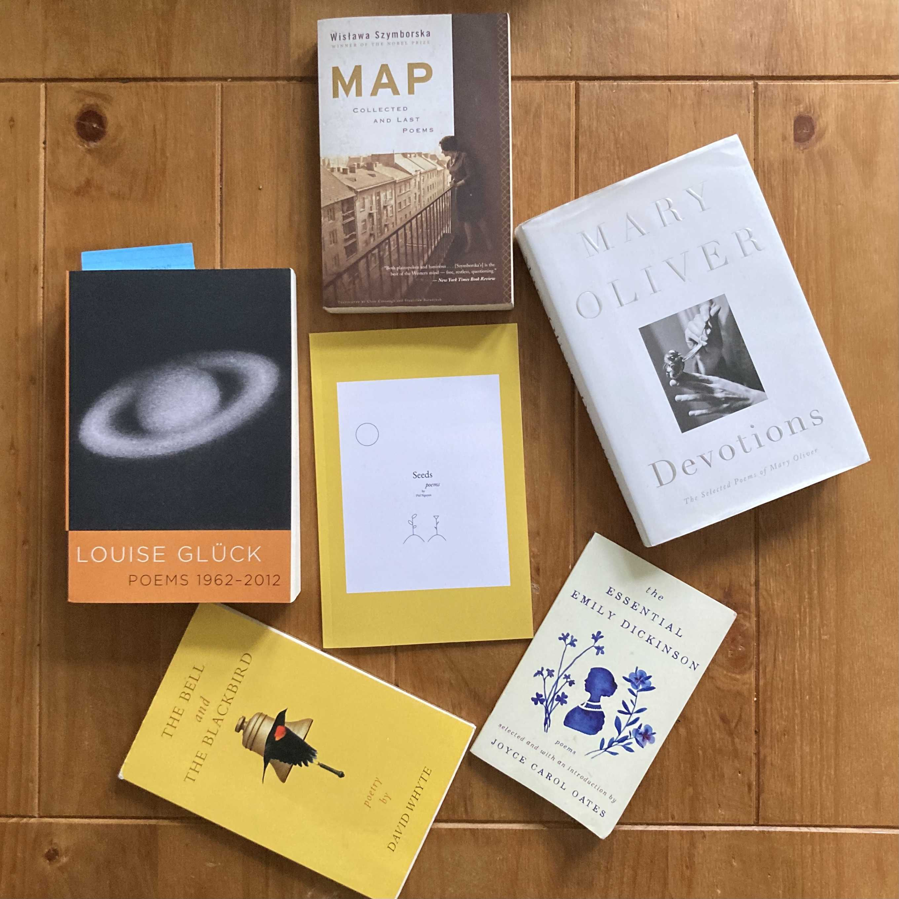
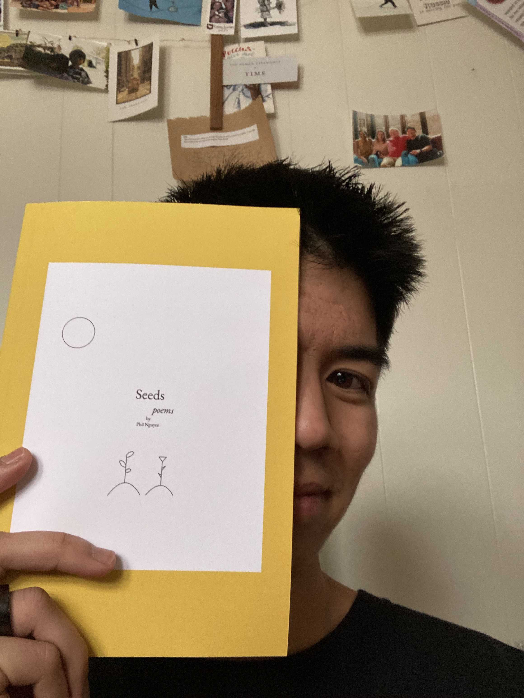
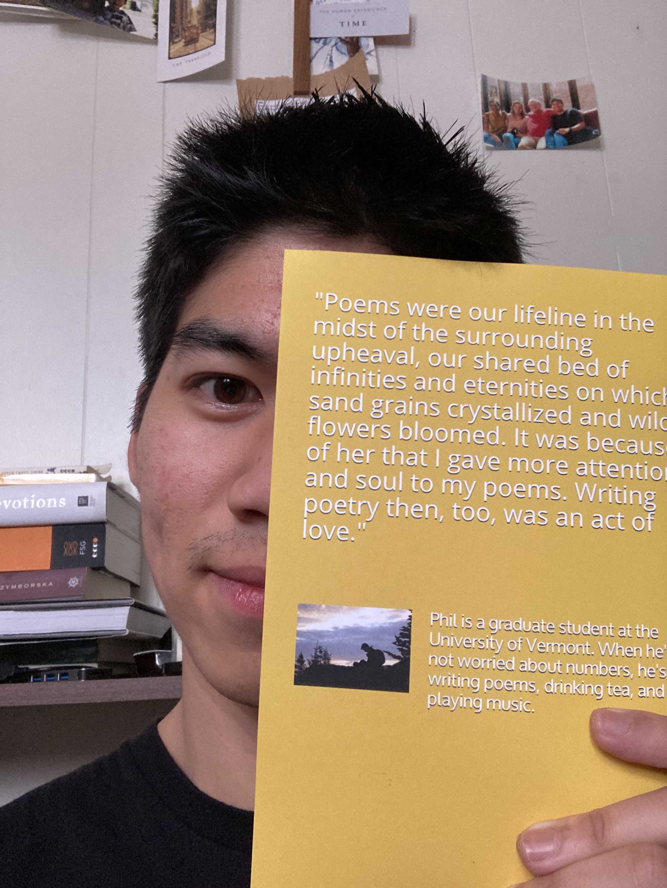

Seeds: My First Collection of Poems

I began reading poetry in 2017 (with Mary Oliver’s Wild Geese as my gateway drug) but didn’t seriously start writing my own until early 2020. This was spurred in part by curiosity, though mostly it was desire: a desire to slow time in its tracks, and to give better attention to the daily minutia.
Once, I was in the MRI room of the hospital (where I work) waiting to start a child’s scan. The main operator – a friend of mine – walked in a few minutes later, plopped his things down, and settled himself into his chair. He seemed tired and somewhat disgruntled, and I asked him about it. “Nothing out of the ordinary,” he said. “Just another day! It isn’t Rome, that’s for sure (referring to our lab trip).”
I agreed, it was just another day, though comments like this tend to put me off. They suggest that what one has in front of them is insufficient; that life, unless experienced in ideal circumstances, is best resigned to the hand of time, to the false certainties of the future, while the ground beneath you is left fertile. Once the scanner was running, the technician drew out his phone, chuckled, and whispered to himself “Time to collect that time off again.”
It wasn’t long before COVID-19 began ravaging the world, leaving us without nothing more than slowed time, broken promises, and the minutia in its wake. What followed were weeks spent wandering. Daily I walked the same route on the same path by the lake, not really sure what to make of it all. So much of our thoughts hinge on the prospect of the future in the winter of our struggles, but that was no longer an option.
Writing poetry, then, became an act of survival and defiance against circumstance. It was the untarnished thread that pulled me through the despondence and existential loneliness that inevitably came to accompany my days. Often pulling the line on the other side was my dear Ukrainian penpal, Sasha. We connected online early in the pandemic via the first four lines of William Blake’s Auguries of Innocence:
- To see a World in a Grain of Sand
- And a heaven in a Wild Flower
- Hold Infinity in the palm of your hand
- And Eternity in an hour
I sent these lines not knowing how well they would capture the nature of our correspondence and the development of our companionship. We wrote and sent poems to each other daily, even hourly early on. Poems were our lifeline in the midst of the surrounding upheaval, our shared bed of infinities and eternities on which sand grains crystallized and wild flowers bloomed. It was because of her that I gave more attention and soul to my poems. Writing poetry then, too, was an act of love.
The result is this handpicked collection of 20 poems. Chosen are the ones I enjoyed writing most. They are the result of a continual attempt to make sense of and find meaning in 2020. They are also my way of cashing in on life without leaning on time collected and the precarious promise of the future.


You can freely download e-book and kindle versions to read on your devices here.
If you want a paperback copy, you can purchase that here - the price ($5) covers the cost of printing it, with about a dollar going to me.
I like writing poems because they force me to reconsider my relationship with the world, to see things in a new or rediscovered light. If any of these poems resonated with you, made you smile or feel inspired, less alone, and even second-guess what you thought you always knew, send me a message (nguy.philip at gmail.com) - I love hearing about how my work makes people think and feel (feedback is welcome too)! Or if you’d like, consider sending a coffee my way.